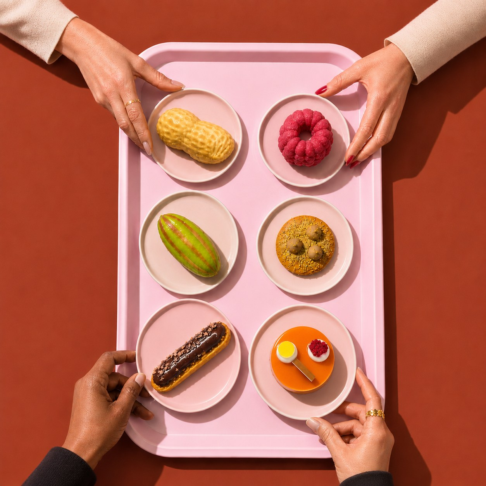
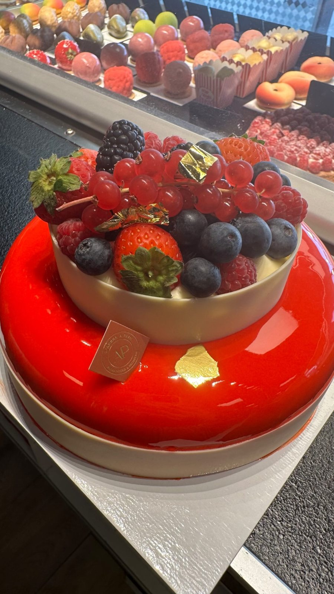
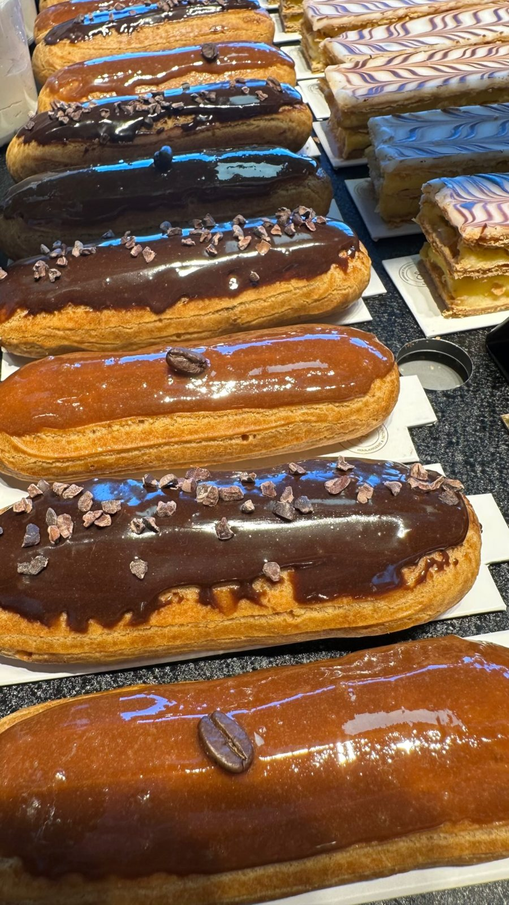
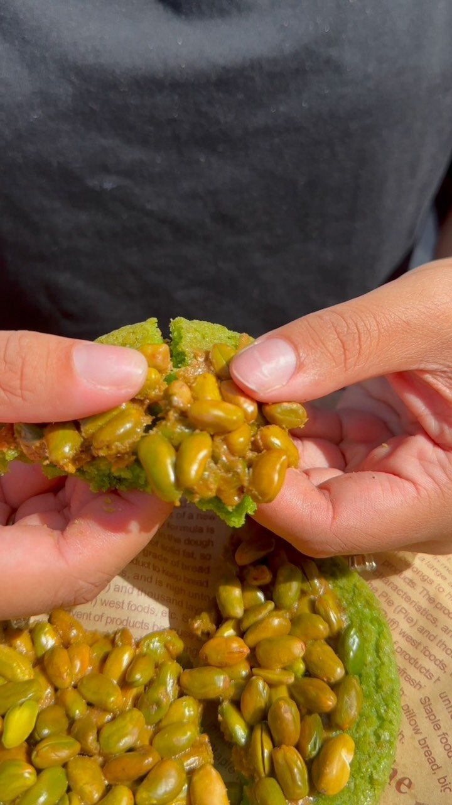
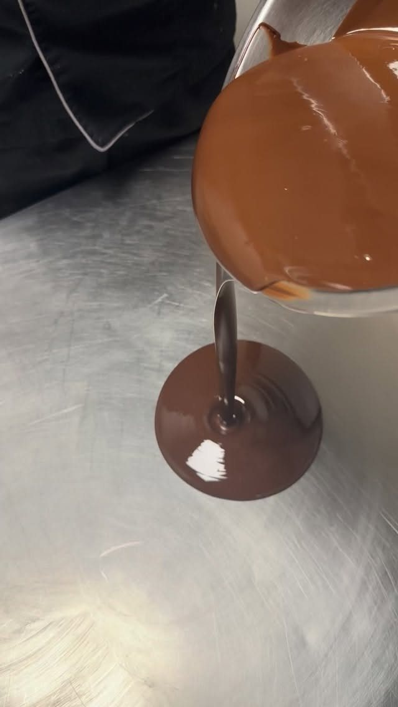
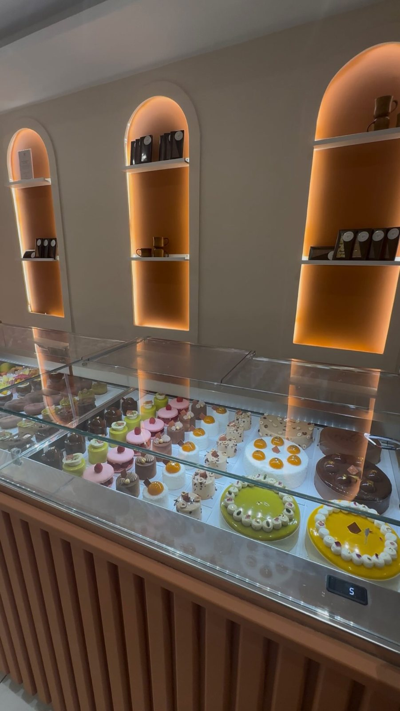
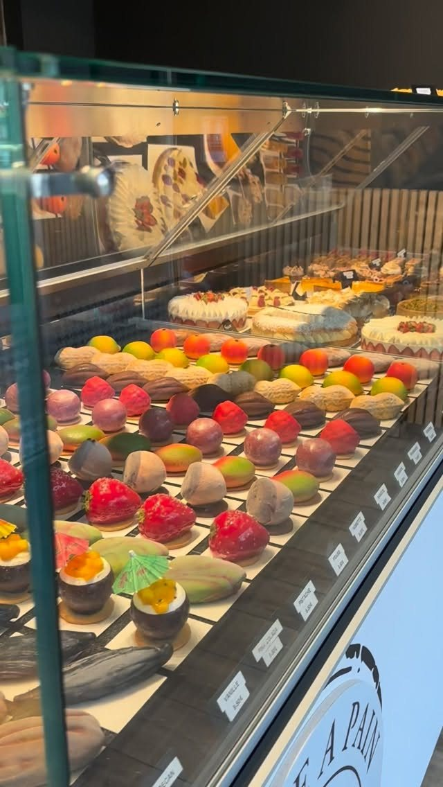

L'illusion
à regarder,
le vrai goût
à croquer
Trompe-l'œil signature, pâtisserie fine et boulangerie artisanale. Fait maison, à Mimet et à Aix-en-Provence.
Voir les trompe-l'œil
Trois savoir-faire, une même exigence
Le visuel compte autant que le goût. Chaque création est dessinée, montée et finie à la main dans notre laboratoire.

Trompe-l'œil
Pêche, citron, mangue, noisette, cacahuète. On s'y trompe au premier regard, on comprend à la première bouchée.
Découvrir la collection
Pâtisserie fine pour événement
Anniversaire, mariage, baptême, soirée d'entreprise. Des entremets et pièces sur mesure, pensés pour votre table.
Préparer un événement
Tradition, salé et sucré
Éclairs, tartes, viennoiseries, pains, sandwichs et focaccias. Les classiques, faits comme il faut.
Voir la boutiqueEn vitrine, en ce moment
Une équipe formée par Béchir Hamed
Nos pâtissiers ont appris leurs gestes auprès de Béchir Hamed, pâtissier formateur reconnu à l'international, avec 28 ans de métier. Ce sont eux qui réalisent chaque jour les créations de la vitrine, avec la règle qu'il leur a transmise : si ce n'est pas beau et bon à la fois, ça ne sort pas du laboratoire.
Découvrir notre formateurLe bon produit d'abord
Un trompe-l'œil pistache doit avoir le goût de la pistache. Nous choisissons des matières premières de qualité, du chocolat de couverture, de vrais fruits, du beurre et de la crème, et nous fabriquons tout nous-mêmes.
Ce que nous mettons dans nos pâtisseries

Recettes et coulisses
Des recettes à refaire chez vous et quelques secrets de laboratoire.

Trompe-l'œil : que cache un fruit qui n'en est pas un ?
Coque, mousse, cœur coulant. On ouvre une de nos créations.

Recette : cookies fourrés aux fruits rouges
Croustillant dehors, fondant dedans, avec une compotée maison.

Recette : tarte aux figues, crème légère à la vanille
La tarte de fin d'été, simple et très élégante.


Deux adresses pour venir goûter
Mimet
Parking Intermarché, 13105 Mimet
ItinéraireAix-en-Provence
29 rue Espariat, 13100 Aix-en-Provence
Itinéraire
Une envie, un événement, une idée folle ?
Dites-nous la date, le nombre de convives et ce qui vous ferait plaisir. Nous revenons vers vous avec une proposition et un devis.